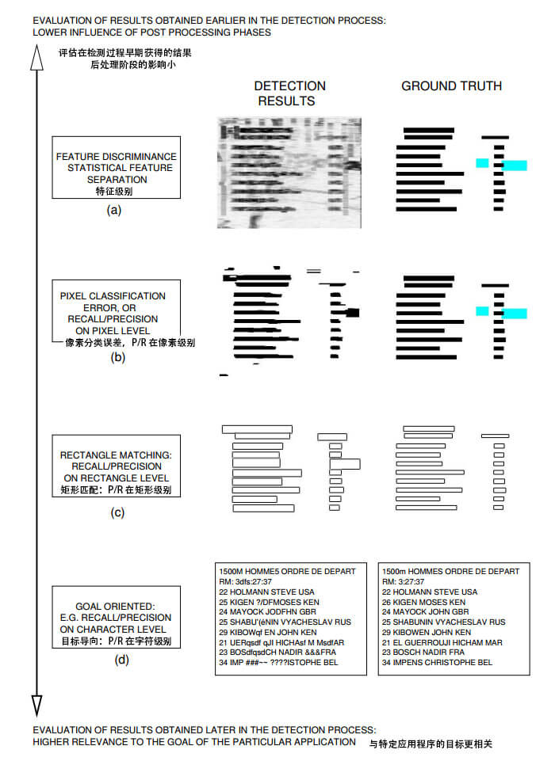
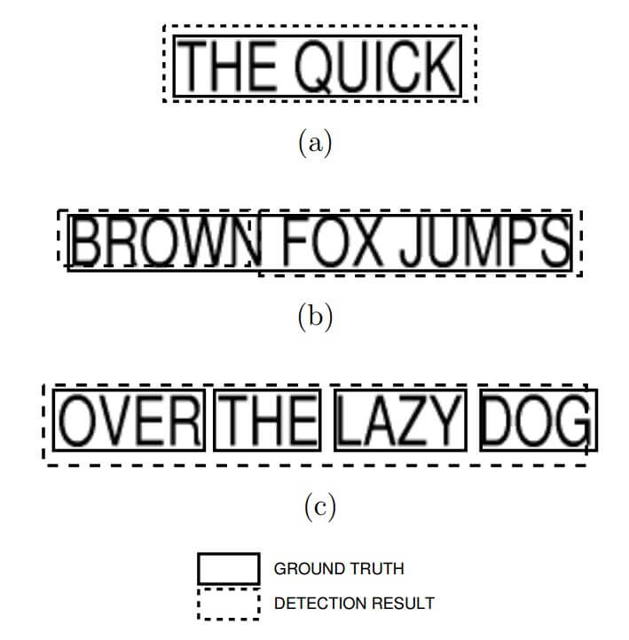
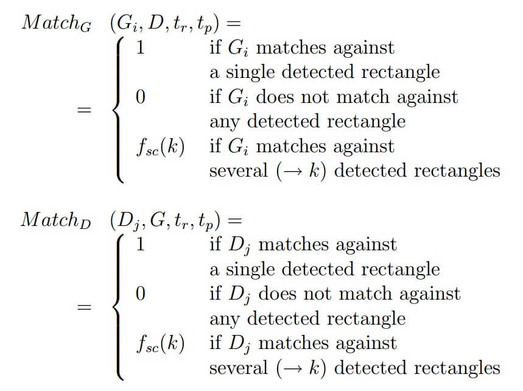

资源
论文：tr-liris-2005-wolfjolion.pdf (chriswolfvision.github.io)
软件：DetEval - Evaluation software for object detection algorithms (chriswolfvision.github.io)
全文
Abstract
对象检测算法的结果通常通过将 检测到的对象的边界框 与 Ground Truth 对象的边界框 进行比较来评估。常用的 Precision 和 Recall 是根据这两个矩形的重叠面积计算的。
本文提出了一个新的算法以评估 Object Detection and Segmentation Algorithms 的性能。
1 Introduction
评估算法应该：
- 对所获得的测量结果进行简单直观的解释。
- 不同算法之间的客观比较以进行评估。
- 考虑到算法的目标，所获得的度量与要评估的算法的目标性能之间具有良好的对应性。
Page segmentation 和 text/object 检测之间的一些差异：
-
对于 page segmentation 问题，相关信息的密度（“通用性”，见第5节）更高。
-
在 page segmentation 上下文中，区域可能是非矩形的。所提出的基于对象原因的矩形表示的评估算法在这种情况下不适用。
第二点将所提出的评估系统限制在用矩形很好地表示的对象上，这是文本、人脸、人，一般来说，复合对象的情况。
对于文档图像分析中遇到的其他一些问题，如弯曲文本。这些对象可能重叠，因此单个矩形可能包含多个对象。
本文的主要贡献涉及以下问题：
-
检测质量与检测数量的分离。新的性能图使我们能够轻松感知检测数量（“检测到多少个对象？”和“检测到了多少个假警报？”）以及检测质量（“对象的检测准确度如何？”）。
-
评估了数据库的影响，即提出了检测算法的性能与图像测试数据库结构之间的关系。
-
不依赖于质量相关阈值的单个性能值的推导。
文章结构：
-
第 2 节介绍了该问题，并在不同级别的层次结构上提出了不同的评估模式，该层次结构由不同的可能结果表示形成。
-
第 3 节介绍了对先前关于目标检测算法评估的工作的综述。
-
第 4 节介绍了新的性能图，以方便直观地解释检测性能以及新的性能度量。
-
第 5 节演示了评估算法对测试数据库结构的依赖性，并介绍了一个新的评估图来说明这种依赖性。
-
第 6 节将评估度量应用于两种不同的文本检测算法，并说明了其直观用法。
-
第 7 节作结论。
2 Evaluation levels
传统上，使用为信息检索系统开发的技术来评估对象检测算法。更具体地说，P 和 R 的衡量标准被广泛使用，因为它们直观地传达了结果的质量：
- retrieved 检索
为了使方法的排名具有单一的性能值，这两个度量通常是线性组合的。精确性和召回率的调和均值已由信息检索界引入。
对于对象检测问题，传统的召回率和精度的衡量标准不直接适用，因为是否检测到对象的决定不是二进制的。

Feature discriminance at pixel level 像素级的特征判别
在这个级别上，评估所选特征的质量，而不考虑在稍后阶段做出的分类决定。因此，针对每个像素 评估的结果不是二进制决策，而是特征向量 。将像素分为两个群体，其中第一个群体由根据地面实况标记为“对象”的像素组成，第二个群体由“非对象”像素组成，该级别的评估措施的目标是评估两个群体之间的特征是否良好分离。
假设在这两种情况下都是高斯分布，这种统计分离度量的一个例子是 Bhattacharyya 距离：
其中， 是两个分布的平均向量， 是协方差矩阵。
注意，Bhattacharyya 距离测量在线性决策函数的假设下特征的可分性。如果使用非线性决策函数，例如通过采用 MLP 或基于核的分类器，则需要其他距离测量。然而，这超出了本文的范围。
Classification at pixel level 像素级别的分类
一旦每个像素的分类决策可用，即我们知道每个像素是否属于对象，就可以在像素级别上应用召回和精度的度量：
分类误差可以用于评估。
如果在像素级别评估性能，那么为了获得稳健的度量，Ground Truth 必须非常精确。这种情况很少发生，因为 Ground Truth 主要是通过图像和人类观察者之间的互动获得的，人类观察者可以很容易地检测到物体，但很少能以 1 像素的精度定位它。
Detection at rectangle level 矩形级别的检测
从最终用户的角度来看，更自然的方法是询问对象是否被正确检测到。在这个层面上，我们仍然忽略了检测步骤后处理步骤中的特定领域知识，但我们仍然在每个对象/矩形的基础上评估检测。这假设对象形状紧凑，矩形方法对其有意义。如对人类、人脸、文本、工具等。
Goal oriented evaluation 目标导向评价
在许多应用中，由于特定的原因而执行对象检测，这超出了对象的纯定位。例如，人脸检测可能是人脸识别的初步步骤，文本检测可能是文本识别的初步阶段，等等。
在这种情况下，为了考虑特定目标，评估算法应该求助于应用程序特定处理的结果。在文本检测的背景下，针对利用文本内容（相对于其位置）的系统的面向目标的评估方案应该惩罚丢失的文本字符以及不存在于基本事实中的附加字符。可能性是字符级别的 R 和 P，或者字符串编辑距离。
选择的评估级别取决于评估的应用和目的。基于像素的评估措施易于计算和解释。
然而，它们与进程的目标缺乏相关性，也不是很准确。它们通常用于指导用于检测的特征的选择，因为它们不受检测算法的后续步骤的影响。
目标导向方法是用于最终评估算法性能的自然方法。它们直接衡量算法可以预期的成功率。然而，对象的本地化往往是应用程序的最终目标。例如，在人脸检测或文本检测的情况下，由于数据质量低，对象的识别可能是不可能的。在图像和视频索引应用中，人脸或文本的存在是可以利用的有价值的信息。在这种情况下，目标导向评估等同于矩形级别的评估。
评估级别（a）、（b）和（d）易于计算和解释，因为它们处理的是直接可比较的“项目”（分别为像素和字符）。
另一方面，基于矩形的评估（级别（c））是一项不平凡的任务：由于检测结果很少与 Ground Truth 中指定的对象完全等效，我们无法轻易判断对象是否被正确检测到。在这项工作的提醒中，我们集中讨论了矩形水平上的评估问题。
3 Previous work
基于矩形的对象检测评估方案的目标是获取 Ground Truth 矩形 G_i，i=1..|G| 的列表 和检测到的对象矩形 D_j，j=1..|D|的列表 ，并测量这两个列表之间的匹配质量。
质量度量应该惩罚在未检测到物体或物体的一部分时发生的信息丢失，并且应该惩罚误判。
大多数算法基于 和 测量的扩展， 和 的度量是在两个矩形 和 的面积以及重叠区域的面积上计算的：
R 说明了已正确检测到的 Ground Truth 矩形的比例，如果额外的错误检测区域的数量增加，则 P 会降低。在这项工作的提醒中，我们将这些措施分别称为“区域召回”和“区域精确性”。
在 2003 年第七届国际文档分析与识别会议（ICDAR）的框架内，使用一个简单的评估方案来评估参加文本定位比赛的系统。一个列表中的每个矩形都与对方列表中的最佳匹配项相匹配：
其中 和 是提供相对列表中矩形的最接近匹配的质量的函数：
如果一个矩形与对方列表中的另一个矩形完全匹配，则匹配函数的值为 1，否则其值为 <1。如果对应矩形的重叠区域较小，则给出的精度和召回率都较低。
ICDAR 评估方案的缺点是只考虑一对一的匹配。然而，在现实中，有时一个 Ground Truth 矩形被“分割”成几个对象矩形，或者几个Ground Truth 矩形“合并”成一个检测到的对象矩形。
梁等人提出了一种评估文档结构提取算法的方法。根据检测矩形和 Ground Truth 矩形的两个列表 和，它们创建了两个重叠矩阵 和 。
矩阵的行 i＝1..|G| 对应于 Ground Truth 矩形，列 j＝1..|D| 对应于检测到的矩形。这些矩阵的值分别对应于行矩形 和列矩形 之间的区域调用和区域精度：
Matching rectangles 是通过对两个矩阵中的值取阈值并将它们分组来完成的。支持不同的匹配类型：
- one-to-one matches 一对一匹配
- one-to-many matches (splits) 一对多匹配（拆分）
- many-to-one matches (merges). 多对一匹配（合并）

（a）一对一匹配；
（b）拆分：一对多匹配一个基本事实矩形；
（c）合并：一对多匹配一个检测到的矩形。
华等人也考虑了拆分和合并。他们引入了两种衡量标准：“检测质量”和“误报率”，前者与召回率有关，后者与（1-精度）有关。
缺点：由于检测质量和检测数量的混合，缺乏直观性和响应的模糊性。
Landais 等人提出了一种不基于重叠信息的评估措施：他们认为当且仅当一个矩形的质心包含在另一个矩形中时，一对检测到的/基本事实矩形是匹配的。
在图形识别工作坊（GREC）竞赛的背景下，对检测直线和圆弧的算法进行了评估。尽管这些图形对象不同于矩形，但所提出的评估算法与为矩形匹配设计的算法具有共同的特征。在[21]中，GREC 组织者描述了两种评估类型，一种在像素级别，另一种在向量级别。后者通过比较直线和圆弧的端点并在这些端点和曲线之间的距离上设置阈值来匹配直线和圆弧。对于每对匹配的直线/圆弧段，提出了一种复杂的质量度量，该度量结合了端点距离、直线重叠、直线与质量、线型质量和线形质量的度量。对于线和弧的集合，将这些度量组合起来形成两个经典度量：向量检测率，对应于一种召回度量；向量虚警率，对应一种精度度量。
与经典的基于矩形的协议一样，该算法将检测质量和检测数量结合在一个度量中，这使得很难理解算法的行为来进行评估。此外，质量度量的复杂性同时也是其主要缺点：性能值难以理解。
4 Object count/Area graphs
只要只涉及两个矩形：单个 Ground Truth 矩形和单个检测结果矩形，R 和 P 就很容易解释。
然而，在多个图像或具有多个文本矩形的单个图像的情况下，这些措施的组合并不简单。
这是上一节中描述的现有评估方案的主要缺点：在评估度量的计算过程中积累重叠信息的方式留下了模糊的空间。
例如，50%的召回可能意味着：
- 50% 的基本事实矩形已经完美匹配，
- 所有基本事实矩形都已经找到，但只有 50% 的重叠
- 介于这两个极端之间的任何东西。
因此，这些 R 和 P 的测量并不是很直观：无法确定检测到了多少文本矩形。同样，检测的质量也不明显。
4.1 Requirements of an evaluation algorithm
我们制定了一个评估方案来解决这些问题。其设计以以下目标为指导：
-
该方法应提供定量评估：评估措施应直观地说明有多少文本矩形被正确检测到，以及有多少误判被创建。
-
该方法应提供定性评估：应易于解释检测质量。
-
它应该支持一对一匹配、一对多匹配和多对一匹配（拆分和合并）。
-
该措施必须扩大到多个图像，而不会失去其力量和易于解释。
我们的设计目标最重要的约束是目标（1）和目标（2）之间的矛盾，目标（1。事实上，这两个目标是相关的：我们认为被检测到的矩形的数量取决于我们对单个矩形施加的质量要求，以便被视为被检测到。因此，我们提出了一种自然的方法来结合这两种测量：二维图，说明它们的相关性。更准确地说，在 y 轴上，我们绘制了对我们来说最有趣的两个度量：对象计数，即与目标（1）相关的度量：
如上所述，这两项措施取决于质量要求，质量要求采用两项措施：区域召回和区域精度。
4.2 Rectangle matching
为了考虑一对一、一对多匹配（拆分）和多对一匹配（合并），我们计算了梁等人在[12]中引入的重叠矩阵 和 。
对矩阵进行分析，以确定两个矩形列表之间的对应关系。通常，在具有索引 的元素中的非零值指示基本事实矩形 与结果矩形 重叠。然而，只有当重叠满足质量约束时，即，如果area recall 和 area precision 高于各自的约束，两个矩形才匹配：
其中 是对 area recall 的约束， 是对 area precision 的约束。详细地说，不同的匹配确定如下：
-
一对一匹配：如果两个矩阵的第 i 行仅包含一个满足上式的元素，并且两个矩阵中的第 列仅包含一个子元素，则一个 Ground Truth 矩形 与结果矩形 匹配。
-
一对多匹配（分裂）：一个 Ground Truth 矩形 与结果矩形 ， 的集合 匹配，如果
- 已经检测到足够大比例的 Ground Truth 矩形：，并且
- 每个检测结果矩形与 Ground Truth 矩形有足够的重叠： 可以被视为其一部分。
-
多对一匹配（合并）：一个结果矩形 与 Ground Truth 矩形的集合 匹配，如果
- 检测到每个基本事实矩形的足够大的部分：，并且
- 每个 Ground Truth 矩形都以足够的区域精度进行了检测：
-
多对多匹配（拆分和合并）：我们的算法目前不支持这种匹配类型。我们的实验表明，在文本检测的情况下，这种情况并不经常发生。
如果出现需要同时拆分和合并的情况，则算法将这种情况转换为多个拆分或一组拆分和一对一匹配：匹配集中的每个基本事实矩形要么是拆分的一部分，如果它与多个检测到的矩形匹配，要么是一对一的匹配的一部分。这种实现的缺点是对组合拆分和合并的轻微不合理惩罚，因为检测到的矩形可能是多组拆分的一部分。在每个集合中，检测到的矩形中覆盖另一个集合的基本事实矩形的部分在原始集合中被错误地报告为“丢失”。
基于这种匹配策略，我们直观地描述了召回率和精度测量：

其中 是评估方案的参数函数，该参数函数控制在分散（即分裂或合并）的情况下施加的惩罚量。如果它的值为 1，则不进行惩罚，值越低，惩罚越多。在我们的实验中，我们将其设置为 0.8 的常数值。
另一种可能性可以是在表达式 和 中使用两个不同的函数，以便以不同于欠分割的方式惩罚过分割。
如果在进行文本检测之后再进行文本识别，这可能会很有用。此外，通过增加对矩形数量 k 的依赖性，例如通过设置 ，可以更严厉地惩罚更多的散射，这对应于 Mariano 等人提出的碎片指数。
4.3 Multiple images
在 个图像的情况下，我们比较了几个 Ground Truth 矩形的列表 与几个结果矩形的列表 。
对象召回和对象精度定义如下：
4.4 Constructing the graphs
如前所述，上式中引入的与对象相关的措施取决于对检测质量施加约束的两个约束 和 。
通过将一个约束固定为一个设定值，改变第二个约束（分配给 x 轴），并在两个图的 y 轴上绘制对象调用和对象精度，可以生成性能图。
我们决定为两个不同的约束选择不同的值：当 固定为 0.8 时，我们为约束 选择了较低的值 0.4。这一决定的动机是，切割文本矩形部分的检测结果比导致矩形过大的检测结果更令人不安。0.4 的值可能看起来很低，但请记住，矩形的面积随着边长的平方而增加。这一事实下图所示，显示了 50% 面积精度的检测结果。检测到的矩形是 Ground Truth 矩形的两倍大，尽管角坐标的差异很小。
4.5 Three-dimensional graphs
性能度量的另一种表示方式是分别在 轴上绘制三个与对象相关的度量（R、P 和 F）的三维图，而 分配给 轴， 分配给 轴。
太复杂了一般不用。
4.6 A single performance value
上面介绍的性能图是一种简单直观的方式来说明对象检测算法的性能。然而，通常情况下，确定算法的单个性能值是有用和可取的，用于不同算法性能的直接比较，或优化检测算法的参数，或控制算法，例如在强化学习环境中[18]。
5 Evaluating the influence of the test database
对于信息检索（IR）任务，目标检测算法的性能在很大程度上取决于测试数据库。很明显，图像的性质决定了算法的性能。例如，我们可以考虑对象类型（用于人脸检测的不同姿势、用于文本检测的人工文本或场景文本）、其大小、图像质量、噪声、压缩伪影等。因此，只有当各个社区决定共享公共测试数据库时，才能对不同算法进行客观比较。或者，我们建议通过对不同难度的测试数据库进行不同的实验来部分解决这个问题。
Huijsmans 等人提请注意这一事实，并调整众所周知的 P/R 图，以便将其与 IR 系统的一般性概念联系起来，该概念定义如下：
然而，与 IR 任务不同，对象检测算法不适用于项目（图像、视频或文档）。相反，使用图像（或视频）作为输入，并检索对象矩形。然而，一般性的概念可以定义为数据库的图像中存在的对象的数量。我们将其定义为
在本文中，在对包含文本对象的图像进行实验的情况下（见第 6 节），我们选择了 50%具有相关对象的图像和 50%不具有相关对象图像的混合图像。
6 Experimental results
我们在两组不同的文本检测算法上测试了我们的新评估度量，这两组算法分别应用于不同的图像测试数据库。
6.1 Evaluating text detection in video frames
评估视频帧中的文本检测。
6.2 The ICDAR 2003 text detection competition results
7 Discussion and Conclusion
在本文中，我们提出了一种新的方法来评估目标检测算法。
所提出的方法适用于任何类型的对象，只要检测结果可以由矩形列表表示即可。